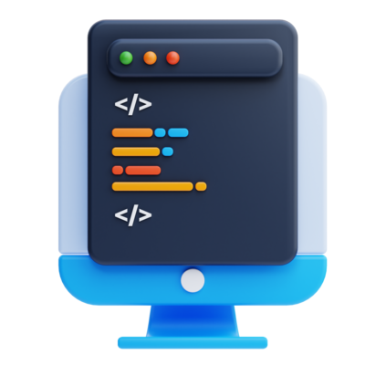

Escuela Superior Politécnica del Litoral
Título: Ingeniería en Computación
Año: 2021 - 2026
Soy una estudiante universitaria que actualmente cursa Ingeniería en Computación. A lo largo de mi trayectoria académica y experiencias profesionales, he desarrolló una base sólida en el diseño de aplicaciones, trabajando en backend desarrollo y creación de API. Mi dominio radica en lenguajes como Java, que Se han utilizado ampliamente para crear soluciones de software sólidas y eficientes. Me apasiona aprovechar la tecnología para resolver problemas del mundo real y mejorar experiencias de usuario. negocios. Estoy ansiosa por aportar mi experiencia a un equipo dinámico y contribuir a el crecimiento y éxito de proyectos innovadores. Soy entusiasta, dedicada y siempre con ganas de aprender y asumir nuevos retos en el campo de la informática.
Nombre: Melissa Ayllon
Email: mayllon@espol.edu.ec
Ubicación: Ecuador
Título: Ingeniería en Computación
Año: 2021 - 2026
Título: Bachillerato en Ciencias
Año: 2008 - 2021
Curso avanzado sobre el desarrollo de aplicaciones web y móviles, abarcando tecnologías como HTML, CSS, JavaScript, React.
Estudio de sistemas de gestión de bases de datos, modelado de datos, SQL, y manejo de bases de datos relacionales como MySQL y PostgreSQL.
Enfoque en la programación de sistemas operativos y software de sistema utilizando el lenguaje C, y conceptos de concurrencia, sincronización y gestión de memoria.
Introducción a los principios y prácticas de diseño de software, incluyendo patrones de diseño, arquitectura de software, y metodologías ágiles.
Responsabilidades:
| Proyecto | Descripción |
|---|---|
| Desarrollo de una Aplicación Web de compras | Construí desde cero una aplicación web utilizando las tecnologías ágiles de Microsoft Platform (PowerApps, PowerPlatform y PowerBI). Esta aplicación está diseñada para facilitar la gestión de tareas diarias, proporcionando una interfaz intuitiva y funcional para los usuarios. Implementé funcionalidades como registro de usuarios, gestión de tareas con prioridades, notificaciones en tiempo real y generación de informes detallados sobre el progreso de las actividades. |
| Implementación del Api para firmar documentos con el software FirmasEc | Implementé el sistema de firma digital utilizando el software FirmasEC, empleando tecnologías avanzadas como JavaEE para la lógica de negocio, PostgreSQL para la base de datos, Docker para la contenerización, y Wildfly Server para la gestión de aplicaciones. Este sistema permite a los usuarios firmar documentos de manera segura y eficiente. |
| Aplicación web para consultoras | Concebí y diseñé un sitio web específicamente orientado a las consultoras, con el propósito de ayudarles a identificar y evaluar a los mejores empleados para proyectos asignados. Esta aplicación web emplea técnicas de análisis de datos y visualización para presentar información relevante de manera clara y concisa, facilitando la toma de decisiones estratégicas. Incorporando el Api de google GEMINI. |
Explicación de un proyecto usando Rust y la API de Discord

Mi equipo PsychoPy obtuvo un reconocimiento por el gran desempeño en el hackaton Build with AI